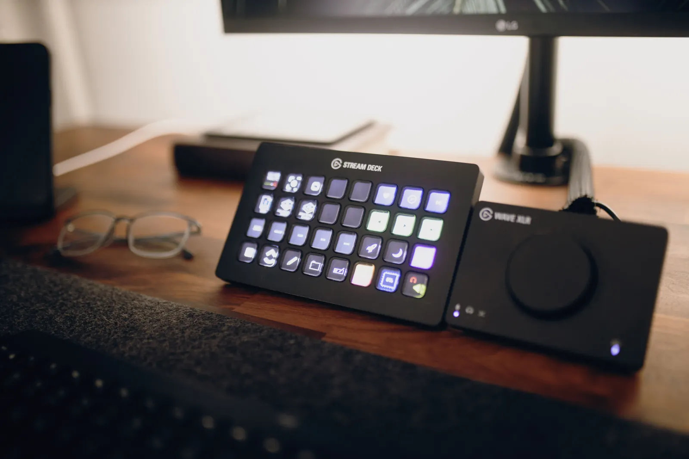

Need a fresh start? We’ll set Windows up properly.
Clean install, drivers, updates and the basic checks that make sure the PC is ready to use when you get it back.

What’s pushing you toward a fresh install?
A reinstall can be the right fix, but it shouldn’t be the default answer to every problem.
Startup errors, corruption or failed updates can make a clean installation the sensible route.
Carry this into Signal Scan →A clean install should leave the PC ready to use.
We don’t stop at the Windows installer. Drivers, updates and basic post-install checks matter too.
A fresh Windows installation on a suitable drive without carrying old problems forward.
Core chipset, graphics, network and device drivers plus Windows updates.
Obvious drive or memory problems are considered so a hardware fault isn’t mistaken for Windows.
Basic configuration so the system is usable and sensible when it comes back to you.
A clear path from symptom to next step.
Important data should be backed up before a clean installation begins.
Windows is installed properly on the correct drive.
We complete the essentials so the machine is ready to use.
Reinstall only when it makes sense.
Windows isn’t always the problem.
A slow or unstable PC can also be caused by storage, RAM, drivers, heat or failing hardware. If reinstalling Windows won’t solve the real problem, we’ll say so.
Based in northern Pretoria
VoltTech serves Wonderboom, Pretoria North, Sinoville, Annlin, Montana and surrounding areas. Remote help may suit some software or creator-tech work. Courier-in work is available only for eligible jobs by prior arrangement; packing, courier method and any charges are confirmed before equipment is sent.
Common questions
Will a clean install erase my files?
It can. Important data should be backed up before the installation begins.
Do you include a Windows licence?
A Windows licence is separate unless specifically quoted. Existing digital activation may reactivate automatically on the same device.
Should I reinstall Windows to fix a slow PC?
Not automatically. Storage, thermals, startup load or hardware limits can cause the same feeling, so diagnosis may be the better first step.
Not sure whether Windows needs reinstalling?
Signal Scan now has a dedicated Windows route, including new-drive installation needs.